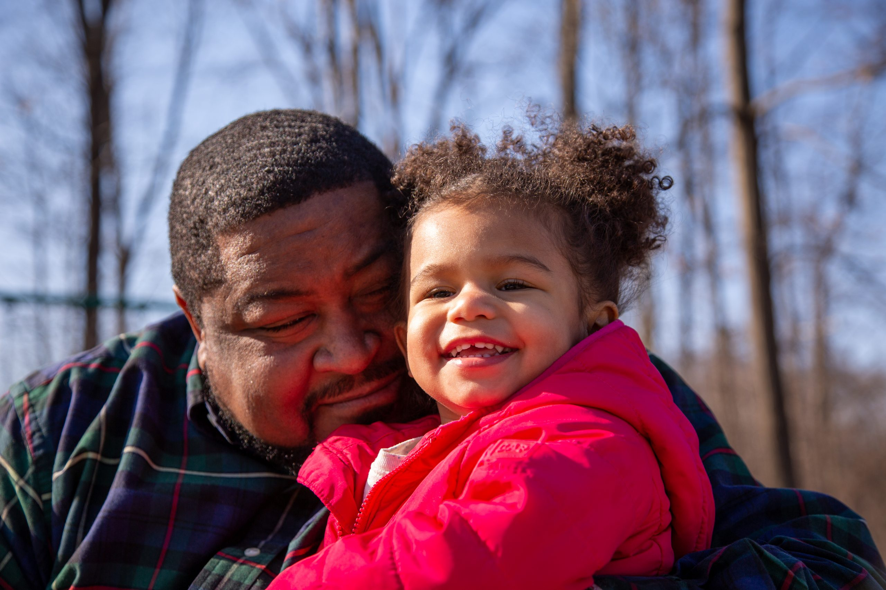

Although you may not consciously realize it, facial recognition technology (commonly referred to as FRT) is used almost everywhere. You use it to unlock your phone, when you’re being watched on surveillance cameras, when you’re going through the TSA line. Of course, with the way that algorithms and artificial intelligence are evolving, facial recognition has many advantages within our society today. They are most notably being used by law enforcement to quickly determine possible suspects for a crime. But this highly advanced technology is not as regulated as you may think it is. While many “normal” AI algorithms have biases ingrained in them, FRT is no exception. And the consequences can be detrimental, even fatal, if not monitored closely.
However, before facial recognition technology, there was simply facial recognition in law enforcement. The biases within facial recognition started with forensic sketches as well. According to flawedfacedata.com, sketches rely on three main components: the eyewitness’ remembrance of the subject’s appearance, the ability of the eyewitness to communicate their appearance, and the ability of the sketch artist to translate the eyewitness’ description into an accurate drawing. Obviously, most of the time, these sketches don’t fare very well.
Eyewitnesses have proven time and time again that sometimes, they are simply unreliable. Cross-racial misidentification is a significant problem when asking witnesses to identify a suspect. Also known as the own-race bias, the cross-race effect occurs when a person has an easier time identifying people from their own race rather than people of another race. Witnesses failing to distinguish facial features from people who are of a different race often contributes to eyewitness misidentification, and likely why 42% of wrongful convictions after misidentifications are cross-racial ones as well.
This disparity also persists when using recognition technology as well. Facial recognition technology has proven to work best on white, middle-aged men. The error rate for identifying light skinned men is approximately 0.8%, but for darker skinned women, it’s almost a whopping 35%, and these rates persisted when tasked with identifying other people of color, children, or the elderly.
Most people don’t realize that own-race bias is also perpetrated by the developers of this technology. In order for these algorithms to be accurate when identifying possible suspects, the data they fed needs to be diverse. Because most of these developers are white males, unfortunately, most of the faces that these algorithms study from are the same. They are, most likely unconsciously, letting their own bias affect how these models perceive faces.
So, white males are overrepresented in these training images. And while black people are overrepresented in criminal databases, and therefore mugshots, they will continue being misidentified because of the lack of similar facial features in the data FRT analyzes. This will lead to more countless misidentifications that FRT results in. And there have already been many.
Robert Williams is just the first out of more misidentifications due to FRT. He was falsely accused of stealing watches from a Detroit store due to faulty facial recognition software. Although he had an alibi—an Instagram video proving he was elsewhere—he spent 30 hours in jail. His arrest on his front lawn affected his family, his standing in his community, and led to ongoing stress-related health issues. Williams filed a federal lawsuit against the Detroit police, alleging they relied solely on facial recognition without investigating other evidence. The police later acknowledged their error, with former police chief James Craig attributing it to "sloppy investigative work."
After Williams' case, Detroit implemented a policy restricting facial recognition use to serious crimes, although enforcement issues remain. The technology’s documented bias against people of color raised concerns among civil rights groups, and Wayne County prosecutor Kym Worthy now requires approval before filing charges based on facial recognition. Despite pushback from the ACLU and Williams himself, Detroit’s city council still renewed a contract with a facial recognition provider.
Williams’ story highlights the alarming consequences of unchecked biases within facial recognition technology and the criminal justice system as a whole. As these tools become increasingly widespread, so too do the risks of wrongful accusations and life-altering impacts for those unjustly targeted. Without accountability and improved oversight, the promise of FRT as a tool for justice remains marred by its potential to perpetuate existing inequalities. For Williams and many others, this technology has highlighted a painful truth: without even an attempt for a reform, facial recognition will continue to carry significant and often irreversible consequences for communities of color.